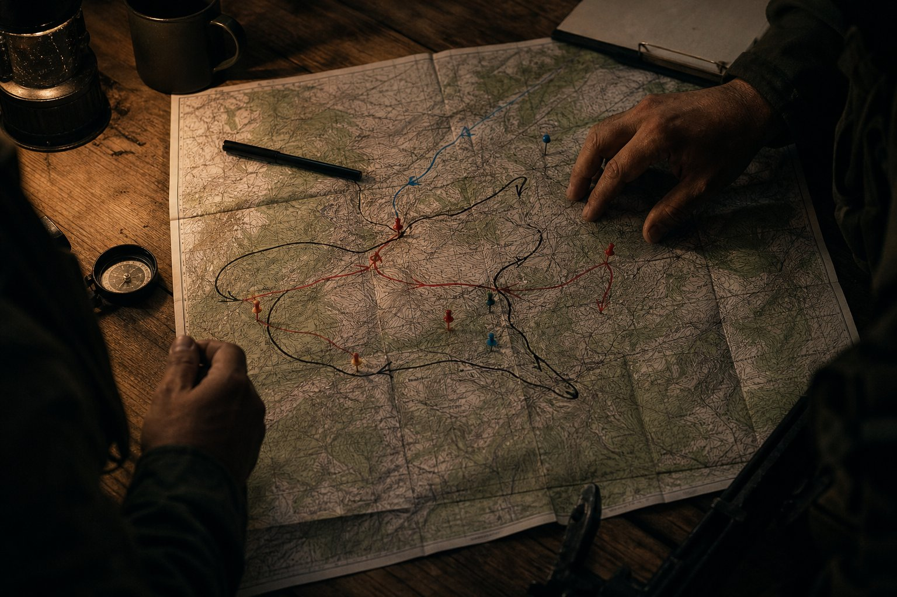

1. La patience armée — le principe directeur
Le meilleur joueur de la communauté l'a formulé ainsi : « Si tu n'es pas sûr de ton tir, tu es mort. La survie de la raid est tout l'intérêt. » Avec le TTK allongé et les headshots renforcés de la S7, tirer en premier est devenu plus risqué que de tirer en dernier.
- Ne tirez jamais le premier si vous pouvez le éviter. Vous n'avez qu'à gagner un échange de plus.
- Surveillez le son avant l'image : un casque audio GS2 (coupe ouverte) est l'information la plus rentable du jeu.
- Relocalisez après chaque engagement : rester en place après un tir, c'est offering une seconde chance à l'adversaire.
- Ne lootez un kill qu'en sécurité : c'est la tentation numéro un et la mort numéro un.
« Weaponized patience »
La formule est apparue dans la communauté : la patience est une arme. Attendre que l'adversaire commette l'erreur coûte zéro Koen et élimine le risque. Les joueurs qui « se battent comme ils l'arrivent » gagnent moins de loot mais survivent plus longtemps — et leur économie tient.
2. La technique du « rat »
C'est la méthode la plus rentable du jeu pour un joueur qui n'est pas au top du PvP, et elle s'apprend en une phrase : entrez sans armure, faites le mort, et ramassez ce que les autres ont payé.
- Entrez avec le strict minimum : une arme, un casque audio, un sac, un rig. Vous êtes « juste au-dessus » du seuil d'entrée.
- Ne vous déplacez qu'en silence et restez à couvert.
- Lisez les combats : quand deux squads s'affrontent, attendez la fin.
- Récupérez l'équipement des morts et des bots.
- Extrayez avec le butin récupéré.
L bank's de la communauté
« J'ai fait 1 000 heures et je joue surtout en Forbidden. En mode Rat, je lis un livre jusqu'aux 15 dernières minutes, puis je farm les munitions T4 des bots et je loot ce qui reste. » Sur un run réussi, la technique rapporte plusieurs millions de Koen — et le coût de mort est minimal.
3. La stratégie économique par mode
| Mode | Stratégie dominante | Seuil de loot | Conseil |
|---|---|---|---|
| Normal | Économie lente mais sûre, farm de loot, clés bon marché | 5 000 K/slot | « Un run Normal bien joué fait 20 à 30 K de butin — c'est déjà un flux d'airain positif. » |
| Lockdown | Le mode qui finance le Forbidden. Kit à 300–400 K, T5, PvP actif | 10 000 K/slot | « Mes raids Lockdown financent mes sorties Forbidden. » |
| Forbidden | Top 5 % du jeu. Rat run ou mort rapide | 15 000 K+/slot | « Le Forbidden est où le top 5 % gagne de l'argent ; les autres grattent. » |
| Secure Ops | Apprentissage sans risque : l'équipement survit à la mort | Ne pas fixer de seuil | Le loot n'est pas extractible en objets : il est converti en Koen à la sortie |
Le seuil de bascule
Un consensus Reddit : au-delà de 5 millions de liquidité, passez en Lockdown à T5 et restez-y. En dessous, accumulation en Normal. Le moment où l'on bascule est l'un des seuls vrais jalons de progression économique du jeu — et il est purement lié au capital, pas au talent.
Secure Ops : le mode où rien n'est perdu
Secure Ops est le mode le plus sous-estimé du jeu. La formule officielle tient en une phrase : « In Secure Ops, you won't lose any gear when you fail to extract. If you extract successfully, all the supplies you've gotten in the raid will be converted into Koen. » Vous gardez tout l'équipement que vous portez, même si vous mourez ; en revanche, les munitions, les soins et le butin que vous avez consommés ou ramassés sont perdus — seul l'équipement porté survit.
Le mode a une contrepartie économique qu'il faut connaître avant de s'y habituer : à l'extraction, le butin n'est pas extrait en objets, il est converti en Koen. Les joueurs rapportent une conversion de l'ordre de 30 à 40 % de la valeur affichée, et encore moins pour une armure endommagée. Deux corollaires pratiques : les armes, attachements et objets de valeur convertissent le mieux, tandis qu'une armure usée sous la moitié de sa durabilité perd une part importante de sa valeur de conversion. Communautaire
Une rumeur circule depuis le 13 novembre 2026 : « Secure Ops exige une armure neuve ». Elle est false — c'est une suggestion de joueur, pas une règle. Aucune note de patch ne l'a ajoutée et l'armure usée fonctionne toujours dans le client de la Saison 7. Vérifiez toujours dans le jeu plutôt que de croire une rumeur de forum. Communautaire
La meilleure façon de l'utiliser reste l'apprentissage : aucun gear à perdre, aucune conséquence économique. C'est le mode recommandé pour calibrer sa sensibilité et ses réglages, et pour roder un build avant de l'emporter en Lockdown.
Secure Ops : le plafond de 600 000 Koen et comment le contourner
Secure Ops a une limite de valeur d'équipement, et cette limite est la caractéristique du mode : c'est elle qui décide de ce que vous pouvez y emmener. Les joueurs de la Saison 7 rapportent un plafond de 600 000 Koen de valeur d'équipement, visible sur le compteur Equipment Value de l'écran de loadout. Le mode n'affiche pas de plafond de tier visible : un build de classe 6 est autorisé. Ce qui compte, c'est la valeur, pas le niveau. Communautaire
| Règle | Ce qu'elle dit | Ce que ça change |
|---|---|---|
| Seul l'équipement porté compte | « The game only counts what you're wearing as equipment, not what's in your bags. » | Le sac est hors calcul ; porter une armure dans le sac est bloqué par le jeu |
| L'usure dévalue | La valeur d'une plaque tombe avec sa durabilité | Une classe 6 à 0/10 compte à peine : c'est la porte d'entrée du build lourd |
| Les chargeurs chargés comptent | Un chargeur de 50 balles vaut autour de 25 000 K | Charger l'arme en raid plutôt qu'avant : autant de valeur laissée dehors |
Le pooling d'escouade. Quand l'équipement est neuf, une escouade contourne le plafond autrement : chaque membre apporte une seule pièce coûteuse sous son propre plafond, puis la dépose pour un joueur désigné après l'apparition. La communauté appelle ce montage un « Voltron ». Ce n'est ni une astuce d'exploit ni une triche : c'est la mécanique du mode, utilisée comme elle a été conçue. Communautaire
Un seuil qui a bougé. Les discussions les plus anciennes de 2025 citent un plafond de 400 000 Koen, pas 600 000. Le plafond a donc changé au moins une fois. La règle qui vaut : lisez la carte du mode dans votre client avant d'entrer en file. Communautaire
Le plafond de Lockdown pourrait baisser : ce qu'il faut en faire
Le 17 novembre 2026, MoreFun a ouvert un sondage de mi-saison sur les règles d'entrée. L'une des questions porte sur la baisse du plafond de munitions en Lockdown de T5 à T4, avec une exception pour les munitions de sniper ; l'armure et les casques T5 resteraient autorisés. Ce n'est pas une règle en vigueur : rien n'est daté, rien n'est appliqué, et le T5 reste autorisé en Lockdown aujourd'hui. Officiel
Pourquoi cela vous concerne même sans attendre la confirmation : le débat porte sur la structure du tier, pas sur un détail. Si le T4 devenait la norme en Lockdown, le 7.62×51 serait la seule munition T5 admise — et donc le FAL, le G28 et le M24 s'imposeraient, le FAL en automatique capable de tenir le T5 à faible cadence. C'est précisément le risque que la communauté signale : la concentration du tier élevé sur un petit nombre d'armes au lieu d'un vrai équilibre. Communautaire
La règle de conduite est simple : n'achetez pas de munitions T5 en gros pour Lockdown, gardez vos kits modulaires, et traitez le T4 comme la valeur sûre. Le T5 est autorisé aujourd'hui ; il pourrait ne plus l'être au prochain correctif ou à la Saison 8. Le détail du sondage est dans la page des patch notes.
Le jeu meurt-il ? Non — et les chiffres le disent
La question revient sur Reddit toutes les quelques semaines, et elle se pose toujours au même moment : la fin de saison. Voici les chiffres Steam relevés au 18 novembre 2026, à 03:00 UTC.
| Mesure | Valeur | Ce qu'elle signifie |
|---|---|---|
| Joueurs connectés | 12 144 | 03:00 UTC : 22 h aux États-Unis, 6 h à Moscou — hors créneaux Europe et Asie |
| Sommet sur 24 h | 25 753 | Le meilleur chiffre à citer pour l'heure de pointe |
| Moyenne sur 30 jours | 21 769 | Du 19 octobre au 18 novembre |
| Sommet sur 30 jours | 37 331 | Dans la même fenêtre |
| Record historique | 65 944 | Septembre 2025, le mois du lancement 1.0 |
La lecture correcte est simple : sur l'année 2026, la moyenne mensuelle est restée enfermée dans une bande étroite, entre 16 905 et 24 947 joueurs concurrents. Octobre 2026, à 24 947, est le meilleur mois depuis octobre 2025. Le creux actuel, à 12,7 % sous octobre, reproduit exactement le creux de fin de saison déjà observé en février-mars et mai-juin : les plus bas historiques sont 18 569 en décembre, 18 022 en mars et 16 905 en juin — et les 30 derniers jours sont au-dessus des trois. Documenté
Ce que chaque lancement de saison fait à la courbe. C'est le signal le plus fiable. Sur les quatre lancements depuis janvier, la moyenne mensuelle a bondi de 22 % à 41 % à chaque fois : +30,7 % en janvier pour la Saison 4, +22,4 % en avril pour la Saison 5, +40,7 % en juillet pour la Saison 6. La Saison 7, elle, n'a apporté que +1,8 % — non pas parce qu'elle déçoit, mais parce qu'elle a suivi un août déjà très fort. Traduction : un lancement de saison reste le premier levier de croissance du jeu, même quand son effet immédiat est faible. Documenté
Ce que ces chiffres ne disent pas. Steam n'est qu'un des trois canaux PC du jeu : Epic Games Store et le lanceur officiel partagent la même sauvegarde de compte et n'apparaissent dans aucun graphique. Et le « nombre de joueurs concurrents » n'est pas le nombre de joueurs : le nombre de personnes distinctes qui jouent sur un mois est toujours plusieurs fois supérieur. Ni l'éditeur ni Steam ne publient ce total. Documenté
Le lobby de bots en Lockdown après six morts
Les guides de la communauté signalent un comportement que l'éditeur n'a jamais documenté : après six morts consécutives sur une carte Tactical Ops en Lockdown, la septième partie est tirée dans un lobby composé uniquement de bots, sans aucun joueur réel.
Les conditions rapportées sont strictes : ne tuer aucun opérateur ni aucun Scav, ne rien looter, et ne rien placer dans son conteneur sécurisé. L'astuce consiste à rester sous le seuil de valeur d'équipement — au besoin en retirant son armure dès l'apparition — pour ne jamais être pris pour une cible.
Deux usages en découlent. Le premier est le ramassage de munitions de niveau 4 sur les bots, qui est le but le plus simple. Le second est le mode Warlord, dont le score se fait sur la valeur de loot extraite : un lobby sans joueur réel transforme l'événement le plus compétitif du jeu en bureaucratie. Rappel : Lockdown exige un équipement d'un minimum de 150 000 Koen à l'entrée, budget à intégrer au calcul.
Source : guide de la communauté Steam (Achievement guide, mars 2026) et confirmation rapportée après la mise à jour S5 — Communautaire, non publiée par l'éditeur. Le comportement est décrit par les joueurs eux-mêmes : traitez-le comme une astuce fragile, jamais comme une mécanique garantie.
4. Le timing d'extraction
- Les extractions conditionnelles s'ouvrent vers T+10 minutes (Southern Blockade, Hunter's Path). Le Blockade Ouest coûte 2 000 K en Normal, 6 000 K en Lockdown.
- Les 3 dernières minutes = zone de tier 3 : le jeu place des joueurs de haut niveau autour des points d'extraction. Le dernier quart du raid est le plus dangereux, pas le plus rentable.
- Valley Helipad exige 2 plaques d'identité : une préparation en plus.
- Ne sortez pas du raid par l'extraction la plus proche si elle traverse une zone à fort trafic. L'extraction « gratuite » en durée vaut parfois plus que 30 secondes de trajet supplémentaire.
5. Le bruit comme ressource
C'est le concept le plus important de l'extraction shooter : chaque détonation est une information que vous offrez — aux joueurs et aux mutations.
- Le silence est un multiplicateur de loot : les zombies que vous contournez ne coûtent pas de munitions.
- Tirer sur les voitures de police déclenche un événement de horde en zone infectée. Ne le faites jamais près d'un loot.
- Le suppresseur réduit le rayon d'information — mais pas la distance de l'information : vos balles traversent quand même.
- Le son de pas : réservez l'endurance (sprint) pour les moments où vous ne voulez pas être entendu.
6. Les 5 règles de survie
- Chaque slot compte. Visez 5 000 K par case en Normal, 10 000 en Lockdown, plus en Forbidden. Un slot vide vaut un slot de red drop.
- Le poids est un ennemi. Un BT101 à 9,8 kg et un sac de 45 L transforment vos 12 minutes en sprint de 4 minutes.
- Le médical n'est pas optionnel. Un membre cassé non soigné = mort. Portez au moins un kit chirurgical.
- Ne restez jamais au spawn. Les zones de spawn sont balayées par les joueurs qui.rotate rapidement.
- Évaluez chaque combat. Un duel contre un kit T6 avec votre fusil T4 n'est pas un duel : c'est un don.
7. Solo ou squad ?
Solo
— Avantage : aucun partage de loot, pas de traître, rotation libre.
— Inconvénient : en Lockdown et Forbidden, vous affrontez des squads de 4. Aucun joueur sérieux ne recommande le Forbidden en solo sans un groupe stable.
— Stratégie : le rat run, les zones à faible densité de joueurs, l'extraction dès qu'elle est ouverte.
Squad
— Avantage : couverture, reviving, partage de munitions, seuil de valeur plus élevé supporté.
— Inconvénient : un mort coûte le loot du groupe, et le butin se partage.
— Stratégie : le build Soutien devient le plus rentable du jeu : un STO First Aid Set de plus vaut mieux qu'une lunette thermique.
8. Explorateur de cartes
Les sept cartes de Kamona ne se valent pas. Filtrez par difficulté, par état d'infection ou par mode, et comparez le nombre d'extractions, le rôle de chaque carte et les points d'intérêt relevés par la communauté.

Ordre d'apprentissage recommandé
Farm en premier (champs ouverts, 14 extractions, la plus lisible), puis Valley pour la longue distance, puis Airport pour le rendement. TV Station et Armory ne sont pas des cartes de départ : elles servent à perfectionner le combat rapproché une fois l'extraction maîtrisée. Cet ordre est un consensus de guides communautaires de novembre 2026, pas une directive de l'éditeur.
9. La routine d'entraînement
La communauté est claire : le skill avant le gear. « Le mouvement, le loot, la gestion des munitions, la connaissance des cartes et l'IQ d'extraction shooter comptent plus que n'importe quel kit. »
| Semaine | Objectif | Exercice |
|---|---|---|
| 1 | Maîtrise du déplacement | Alterner Normal et Lockdown, sprint court / marche / accroupi, rotation silencieuse |
| 2 | Gestion de l'inventaire | Objectif : 5 000 K par slot à la fin de chaque raid. Jeter ce qui ne sert pas. |
| 3 | Maîtrise balistique | Chaque arme que vous possédez : apprendre son pattern de recul au Workbench ou en No Man's Land |
| 4 | Connaissance des cartes | Une carte par jour, ses spawns de valeur, ses extractions, ses lignes de vue |
| 5 | Discipline de tir | Toujours tirer en second, toujours se relocaliser, toujours loot en sécurité |
La routine « 15 minutes » du hit-parade de la maîtrise
Chaque jour : 15 minutes en No Man's Land (zombies, Pattern de recul, aucun risque) puis 1 run Normal avec un kit à 100 K. Cette routine, ludique et économique, fait plus progresser qu'un pass saisonnier.
10. Les erreurs récurrentes
- Le gear fear : « je ne suis pas prêt pour le Lockdown ». Vous ne serez jamais prêt ; vous le deviendrez en mourant 10 fois à 100 K au lieu d'une fois à 2 millions.
- Over-équipement : au-delà de 20 % de votre stash dans une sortie, chaque mort est une crise économique.
- Le spawn camping : rester près de son point d'apparition est la cause de mort la plus stupide et la plus fréquente.
- Suivre le bruit : aller vers un combat est rarement le bon choix, sauf si votre kit est supérieur.
- Négliger le médical : un membre cassé est une death sentence à retardement.
- Survivre passivement : « les survivants finissent toujours par mourir sur le point d'extraction ». Survivre, c'est bouger, accepter une occasion.
Pour les builds, voir le guide des builds par rôle. Pour le classement des armes, voir la tier list globale. Pour l'outil, voir le Loadout Optimizer.
11. Sources
Communautaire
- Secure Ops Explained : gear limit, Koen payout & best loadout — mise à jour du 16 novembre 2026 : règle officielle de conservation du gear à la mort, conversion du butin en Koen à l'extraction (30 à 40 % de la valeur affichée, moins si l'armure est endommagée), build recommandé (fusil 5.56/5.45 de meta, casque et gilet T5 usés, magazine dans le rig plutôt que dans l'arme), et démystification de la rumeur « l'armure doit être neuve » posée sur Reddit le 13 novembre 2026. timesaver.gg (nouvel onglet)
- Best Budget Loadout (Saison 7) — mise à jour du 14 novembre 2026 : correspondance du kit au mode, plafond T4 en Normal, meilleur gilet T3-T4, et munition T4 comme meilleur compromis pénétration/prix. timesaver.gg (nouvel onglet)
À vérifier
- Le taux de conversion du butin en Koen en Secure Ops (30 à 40 %) est un relevé communautaire, pas un chiffre publié par l'éditeur : il varie selon la qualité des objets ramassés.